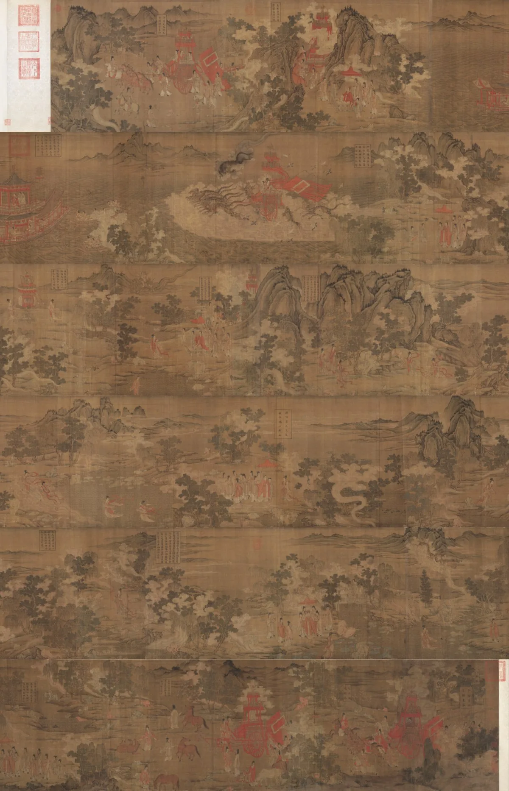
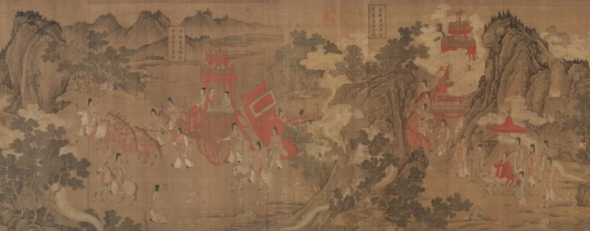
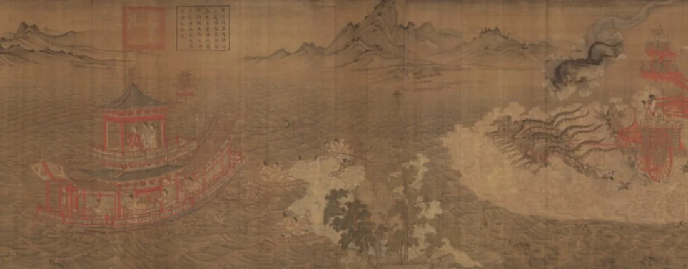
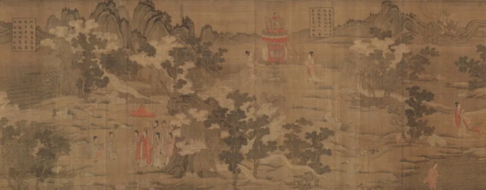
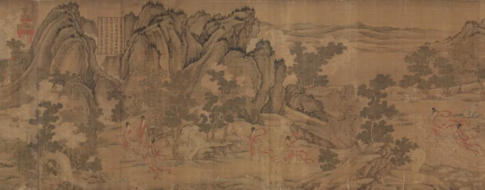
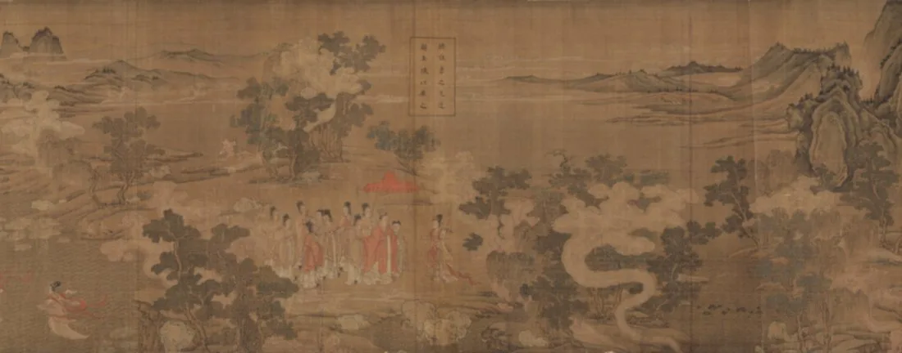
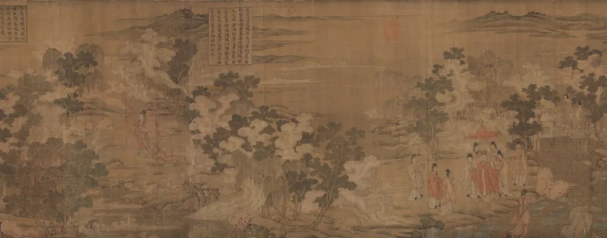
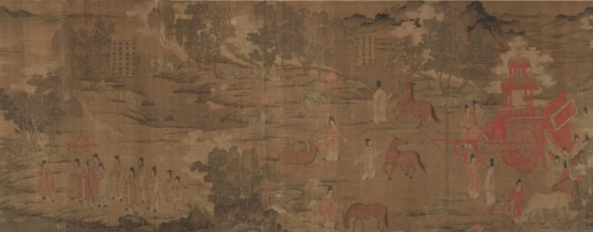
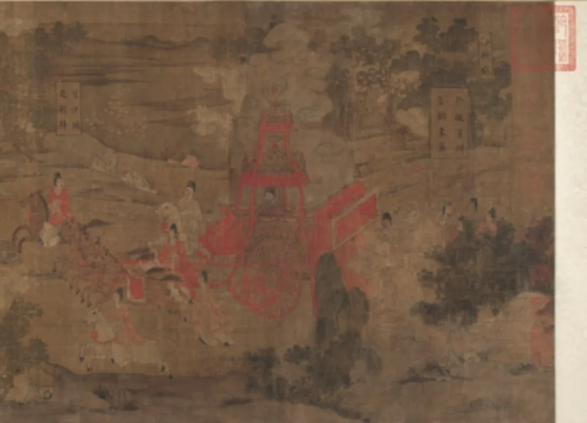

三国曹植写了一篇《洛神赋》，写他与洛水女神宓妃的惊鸿一遇。百年后，东晋顾恺之把它画成了长卷——这是中国『诗画同源』最早的伟大实践之一。
曹植于黄初三年（222）行至洛水，借『洛神』抒写一段求而不得的怅惘；赋中『翩若惊鸿，婉若游龙』，成为形容美与轻盈的千古绝唱。
顾恺之以连环长卷演绎此赋，把文字的起承转合译成了画面的远近行止；人物、山水、神异，被一条条连绵的线串成一卷。
今传《洛神赋图》已非顾恺之真迹，而是宋代摹本（辽宁博物馆、故宫、美国弗利尔各藏其一），但衣纹与章法，仍存六朝风神。
—— 据曹植《洛神赋》与画史通行叙述
他画下的不是女神，而是一个人，怎样把『得不到』画成最美的样子。
从车殆马烦到余情难绝：每一处，都是曹植与洛神的一步。

点击画面中的 ✦ 光点 查看细节 · 图片来源：Wikimedia Commons（公有领域）
一篇三国的小赋，被东晋的线、宋代的摹，一路接力，传到了今天。
222 · 洛水之滨
黄初三年，曹植被封为鄄城王、就国途中过洛水，作赋以寄怀。一篇求而不得的怅惘，自此成为『美』的母题。
➤约 4 世纪 · 东晋
顾恺之以『春蚕吐丝』般的高古游丝描，把赋的叙事译成连环长卷，开『诗画同源』之先声。
➤宋 · 摹本传世
顾恺之原迹已佚，今存皆为宋人摹本。辽博本卷长近六米，是其中最为完整、影响最大的一卷。
真迹早已不存。顾恺之原卷无传，今见三本宋摹（辽博、故宫、弗利尔），皆据其粉本辗转传写——『洛神』靠摹本才活到今天。
线，是他的签名。顾恺之人物衣纹匀细连绵，人称『春蚕吐丝』『高古游丝描』；这种线不为体积，只为气韵，是中国人物画的源头活水。
山水还在『人大于山』阶段。此卷山水树石比例稚拙、人大于山，恰是早期山水画尚未独立的真实痕迹，反而成了断代的证据。
※ 『宋摹』与三本分藏为学界共识；『人大于山』的稚拙比例，被普遍视为六朝山水画初创期的特征。
从初见到余情：长卷用八段，走完曹植与洛神的一步一回头。

曹植车驾停于洛滨，一篇赋的开头被画成一次真实的停驻。

曹植独立水畔、目光投向远方，重逢尚未发生已先有重量。

烟波中洛神翩然浮现，『翩若惊鸿』被读了近两千年。

众神随侍、云车隐隐，神话的排场被画成安静的仪仗。

洛神以玉珰为信约以来年，人神之恋被轻轻托住又放下。

曹植乘舟频望，明知不可追仍要追，是最动人的弧度。

洛神隐入烟水，留白处正是绵绵无绝期的怅惘。

曹植策马归去，心却留在洛水，无奈被画到最后。
《洛神赋》本是无形之文，顾恺之却把它译成有形的行止：人物由远及近、由聚及散，文字的节奏变成了画面的呼吸。
线条匀细连绵、若无骨而实有筋，是顾恺之一脉的标志。它不求立体，只求气韵流转——这是六朝人物画的灵魂。
'可望不可即'的怅惘，自《洛神赋》而定型，影响及于后世无数书画、戏曲与诗文，成为中国美学里『距离之美』的源头。
真迹散佚、摹本接力，使六朝风神得以穿越。它提醒我们：有些杰作，是靠一代代临摹才活下来的。
曹植作《洛神赋》（又名《感甄赋》），以洛水女神抒写求而不得之怀。
东晋顾恺之据此赋绘成连环长卷，开诗画互译之先。
顾恺之原迹亡佚，宋人据粉本摹写，今辽博、故宫、弗利尔各藏摹本。
辽博本定为国宝级文物，与《富春山居图》等同列中国十大传世名画。
它仍是最常被引用、临摹与再创作的魏晋题材之一，一根丝线，牵动两千年。